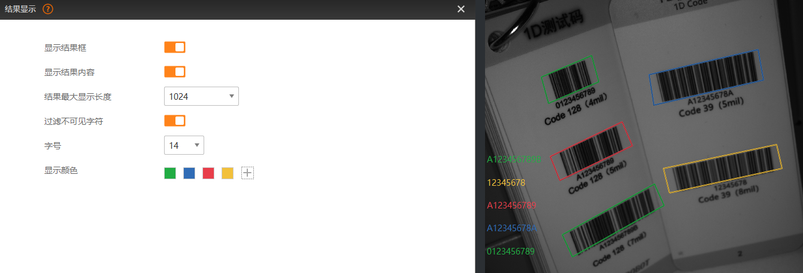

结果显示可对图像预览区域中读取结果的显示进行设置。
结果显示界面的具体参数如下：
开启该功能后，读取到的条码或二维码将会在图像中被框选出来。
开启该功能后，读取结果将在图像预览区域左下角显示。
可设置最大能显示的读码结果长度。可选256、1024、2048和4096。
若读码器实际读取的长度大于设置的数值，IDMVS会根据设置的长度截取读码结果中前面的内容显示。
开启后，可将读码结果中的不可见字符过滤掉，不做显示。否则，会显示对应的效果。
不可见字符主要为分组分隔符、传输结束、代替、记录分隔符等。
可设置显示结果内容的字号。
可设置显示结果框和显示结果内容的颜色。
若读码器同时读取到多个条码或二维码，图像预览窗口会根据此处设置的颜色顺序依次循环使用。
IDMVS已配置“绿、蓝、红、黄”作为默认颜色使用。若无法满足需求，可单击右侧的打开“选取颜色”窗口并选择其他颜色作为新增颜色使用。若需删除添加的颜色，鼠标悬浮在待删除颜色上，单击右上角的即可删除颜色。
仅支持删除自行添加的颜色，默认配置的“绿、蓝、红、黄”无法删除，且无法调整顺序。
此处以IDMVS默认配置的颜色结合下图读码效果作为示例进行说明。下图中共读取到5个条码，前4个读取到的条码会根据设置的颜色顺序依次框选对应的条码，并在左下角显示读取到的条码信息。而第5个条码将重新循环根据配置的颜色进行显示，故显示为绿色。
